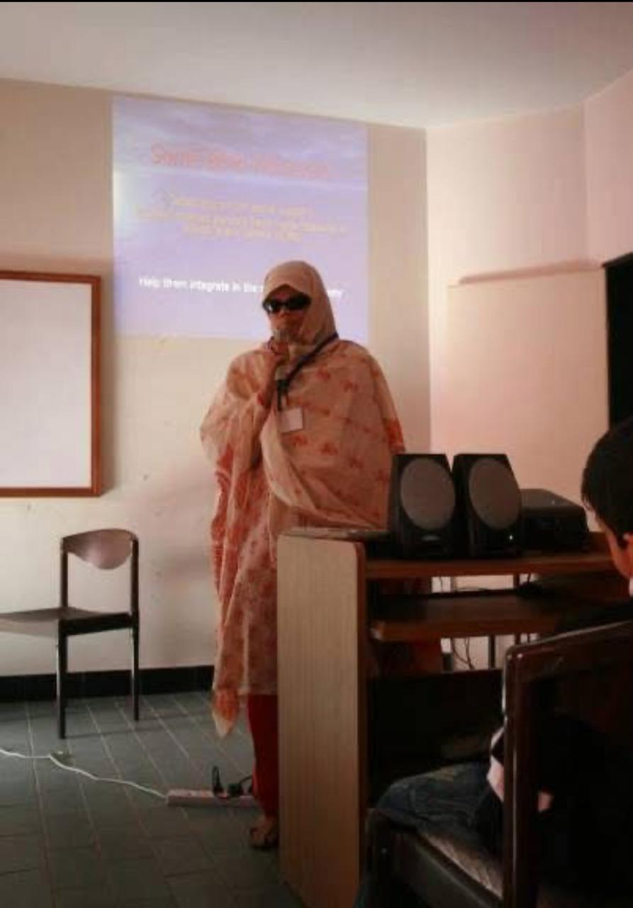
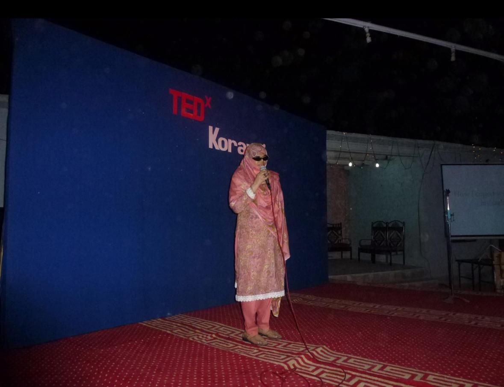
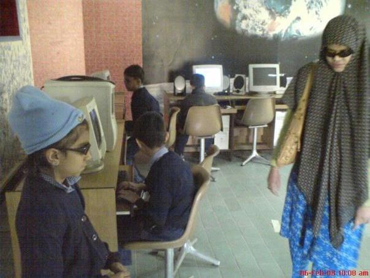
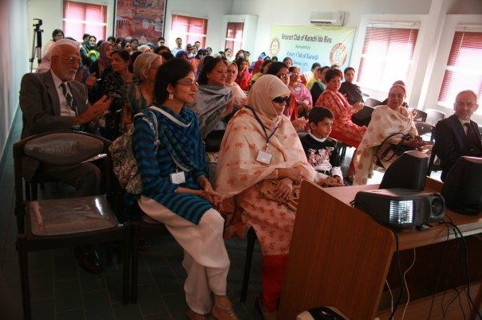
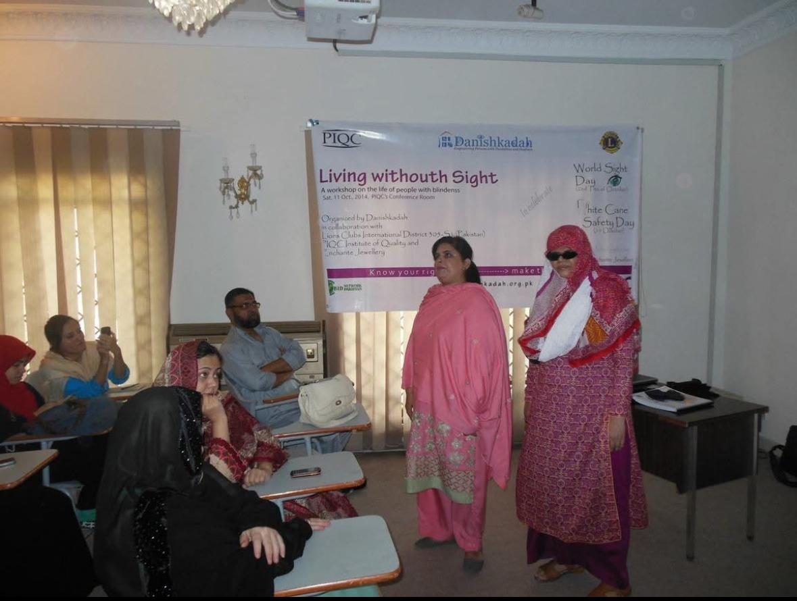

Ms. Shazia Hasan
Pakistan's first visually impaired Microsoft computer user. Educator, mentor, and the founder of Empowering the Differently Abled Persons Pakistan.
We are not disabled — we are differently abled.
A childhood, and a turning point
Karachi, the late 1960s
Shazia Hasan was born in Karachi in the late 1960s, the second of her parents' children. From birth she had vision in only one eye — a quiet, lifelong limit she learned to live around.
When she was nine, glaucoma took the rest of her sight. Glaucoma is a disease of the optic nerve — most often caused by pressure inside the eye — and when it strikes a child it almost always means irreversible blindness. For a nine-year-old, that is a chapter where many lives slow down.
Hers accelerated. She enrolled at the Ida Rieu School for the Blind & Deaf in Karachi and never let education out of her hands. She finished matric. She went on to college. She did what the world of the 1980s rarely expected of a fully blind young woman in Pakistan — she simply refused to be sidelined.

A first for Pakistan
The first visually impaired Microsoft computer user in Pakistan.
At a time when computers were keyboards and beige boxes — and exactly zero things were designed with blind users in mind — Ms. Shazia Hasan was navigating Windows by sound alone. Well enough to become a recorded national first. Long before accessibility was a movement, she was already living it.

On the TEDx Karachi stage
Carrying the story to a wider audience
She has carried her story to the TEDx Karachi stage — and to interviews and podcasts since — speaking publicly about disability, dignity, and what real inclusion actually looks like in practice.
Her message travels with a calm authority that comes from lived experience. There is no theory in it. Only a person who has done the thing, telling you it is possible.
Watch her TEDx talkAlways at the front of the tech curve
JAWS, smartphones, iPads — all of it, fluently
Today she works fluently across desktop, laptop, smartphone and iPad. The tool that makes it possible is JAWS — Job Access With Speech, a screen-reading software that converts on-screen text into synthesized speech and reads the digital world out loud, line by line.
She uses it independently. No assistant, no shortcut around the work. Just keyboard, headphones, and a clear command of the technology.
The technology, though, was always the means — never the end. The end, for her, was always teaching.


Giving back
From student to teacher, in the same lab
She returned to Ida Rieu — this time to the computer lab, on the other side of the desk. She began teaching the next generation of visually impaired learners how to use the machines she had once taught herself.
Years of teaching showed her something she could not unsee. There was a gap. Visually impaired students didn't have training designed for them. Deaf students didn't either. And worst of all — the parents who lived with them, who loved them, often had nowhere to learn how to communicate, how to support, how to simply be present.
A gap, and an answer
Founding EDAP — 2008
In 2008, she founded Empowering the Differently Abled Persons Pakistan to fill that gap. EDAP operates from Ida Rieu's campus and runs three focused programs: computer training for the visually impaired, Pakistan Sign Language for the deaf and their families, and counselling for both the individual and the household.
Since then, hundreds of students — visually impaired and deaf — have come through her work. Many have gone on to professional careers. Many parents now know how to speak with their children for the first time.
Her work reaches beyond the student. She mentors parents of visually impaired and deaf children — guiding them on how to understand, train, and communicate with their child — and helps families build stronger, healthier relationships rooted in love, confidence and mutual understanding. It is, ultimately, work toward a more inclusive and compassionate society — one household at a time.
She does not call any of them disabled. To Shazia Hasan, they are differently abled — and she has spent her entire adult life proving the distinction matters.

We are not disabled — we are differently abled. Ms. Shazia Hasan Founder · EDAP Pakistan